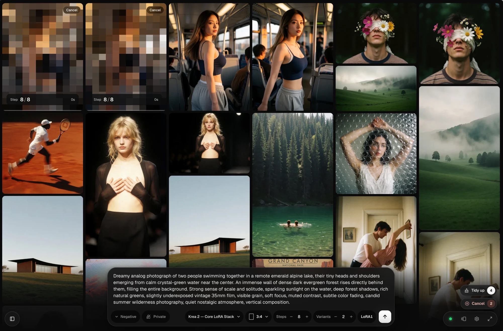

Files you need.
Plain paragraph. Bold for the thing to click or remember. A descriptive inline link, and ComfyUI/models/text_encoders/ wraps on a phone.
-
Model4.1 GB Download
flux-2-klein-4b-fp8.safetensorsComfyUI/models/diffusion_models/ -
Text encoder8.0 GB Download
qwen_3_4b.safetensorsComfyUI/models/text_encoders/
- Plain bullet list, square markers like the site’s labels.
- Keep items short.
- Plain numbered list with pixel numbers.
- For real sequences use the steps block below.
What fits your GPU.
- 8 GBTight
Klein 4B in fp8 at 1024 px. Close the browser tabs with video.
- 12 GBFits
Klein 9B fp8, or Dev as GGUF Q4.
- 24 GBFits
Dev in fp8.
- Mac 16 GBNo
Try Klein 4B instead.
- Flux.2 Klein 4Bfp8 · 4.1 GBFits
1024 px in about 6 s.
- Flux.2 Devfp8 · 35 GBOffloads
Runs from system RAM. Needs 64 GB of it.
Settings that work.
- Sampler
- euler
- Scheduler
- simple
- Steps
- 4
- CFG
- 1.0
- Size
- 1024 × 1024
Set it up.
-
Update ComfyUI
What to do, in one or two sentences.
-
Start it with the right flags
Code blocks sit inside a step or on their own.
Terminalpython main.py --lowvram
Paraphrase of what people keep asking.
Another one.
- You want to build and share node graphsComfyUI
- You have ComfyUI and want a prompt box that just worksHEISS UI
When it goes wrong.
torch.OutOfMemoryError: CUDA out of memory.- What it means and the fix, in plain words.
- Images come out black
- Plain-text symptoms work too.
Picks and tables.
Short answer
One or two sentences that settle it for most people.
An optional second line with the nuance.
Pick SwarmUI if
- A reason that is true.
- Another one.
Pick HEISS UI if
- A reason that is true.
- Another one.
| Feature | HEISS UI | SwarmUI |
|---|---|---|
| Runs on | Your ComfyUI | Its own ComfyUI backend |
| Video | Beta7 families | Yes |
| Phone layout | Yes | No |
Checked 29 Sep 2026 against each project’s docs.

Questions.
A question people actually ask?
A short, direct answer.
Another one?
Answer.
Sources: model card, ComfyUI example workflow, the thread people keep linking.